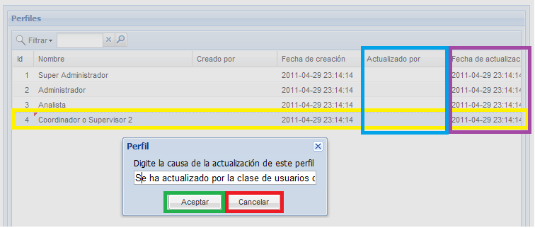

Actualizar
Para actualizar un perfil, de doble click sobre el perfil que desea modificar,
edítelo a su gusto y pulse el botón guardar, el sistema le preguntará porque razón desea
actualizar esta información, digite la razón y pulse el botón aceptar, luego
el sistema le mostrara un breve mensaje en el que informa del éxito de
la actualización. Si usted pulsa el botón cancelar no se realizará
ningún cambio. En la figura 2 se muestra la ventana que desplegaria el sistema para registrar la causa de actualización. Note que después de la actualización, en las columna actualizado por, fecha de actualización y causa actualización se puede visualizar información del quién y porque actualizo el registro por última vez.

Figura 2. Ventana de registro de causa de actualización